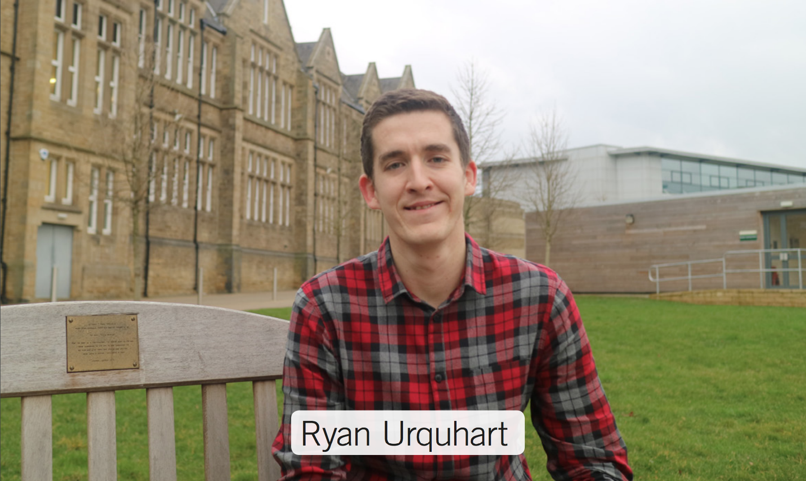

| Link 1 | Link 2 | Link 3 |
|  | Welcome to my Portfolio WebsiteThis site has been designed and developed as part of the assessment criteria for GEOG5995 Programming for Social Scientists, with the intention to update this into a portfolio of work over the course of my PhD. This page will serve as the home page and includes some information about myself and my background. The links below can be used to navigate the website to additional pages, inlcluding the assessed project work for this module. Alternatively you can use the navigation bar towards the top of each page.
|
My name is Ryan Urquhart, I'm a first year PhD Student based in the Leeds Institute for Data Analytics (LIDA) at the University Leeds as part of the ESRC funded Data Analytics and Society Centre for Doctoral Training. As part of this programme I am completing an Msc over the next two years to further develop my research and analytical skills.
My experience in eduction has been fairly interdisciplinary to this point, having studiend Journalism at undergraduate level and leaving University for employment for three years before coming to the University of Leeds to complete my masters degree in Msc Consumer Analytics and Marketing Strategy. It was my exposure to the need for people to have technical data handling skills in a business environment, various analyst roles and human interest and consumer focussed background that influenced my decision to train further in this field. My PhD Project is in the context of the UK Grocery Retail Industry, estimating and predicting consumer E-commerce activities and incorporting this behaviour into spatial interaction modelling.
My academic and employment background is as follows;
Outside of work and academia I have a strong interest in sports and sports statistics, specifically football and tennis (the football analyst job would have been unbearable otherwise) and I am currently a season ticket holder for Leeds United Football Club. My time studying Journalism gave me a real appreciation of creative writing, documentary making and story telling so I try to stay in touch with these and attend events/screenings where possible. Another hobby of mine is Live Music. I try to go to as many lives shows as possible, the genre doesn't really matter (aslong as it has instruments and is performed live) but I really enjoy good Punk music.
Click here to return to the top of the page